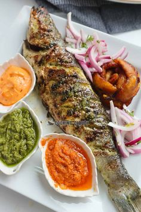
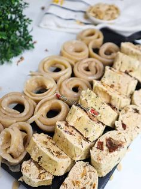

Nos services
Bienvenue au Food237. Votre restaurant pour découvrir les meilleurs plats du Mboa.Ici vous allez découvrir les plats des différentes cultures camerounaises à des prix très abordables.
Poisson braisé
Repas fait à la braise, bien assaisonné , accompagné de frites,bâtons de manioc et bien encore.


Mets de pistache
Repas fait à base du pistache,de poisson fumé, viande et qui s'accompagne par des tubercules comme le manioc, la patate et bien d'autres.
Kati-Kati
Repas fait à base de légumes,et de poulets s'accompagne de couscous et de tubercules.